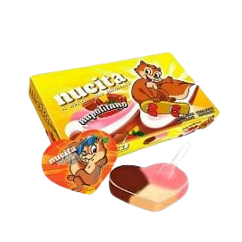

![Foto de perfil de [Nome da Namorada]](imagens/lind.jpg)
Principais Skills
Inteligente
Isso aqui esquece, né? A maioral em química e todas as materias
Cheirosa
Pense numa mulher cheirosa, pura giovanna baby.
Linda
Beleza que irradia por dentro e por fora, iluminando a todos, obrigado Deus por me mandar uma mulher tão linda.
Formação Acadêmica
Atualmente cursando **Química no IFCE** porque além de linda ela também e a mais inteligente, calculou o caminho certinho pro meu coração.
Coisas que ela mais gosta

Nucitinha
Coxinha da Bemvinda
O de sempre né
Barra de ouro branco